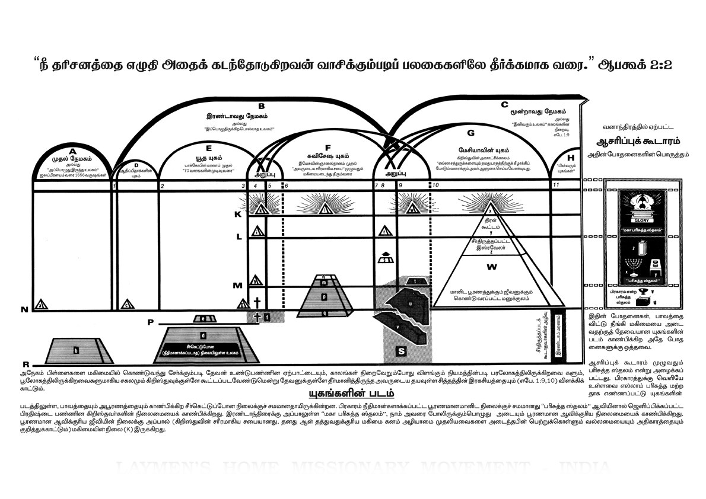

Your plan · reading 1 of 6
ஆத்துமா, மரணம், உயிர்த்தெழுதல்
ஆத்துமா என்றால் என்ன? · Booklet · page 3 of 12
Next reading on Sunday, 1 November: மரித்தோர் எங்கே?
“வேதவாக்கியங்களை ஆராய்ந்து பாருங்கள்” யோவான் 5:39
Read the truth in order. A plan gives one reading a week from the booklets, tracts and magazine. Notes and questions stay with each passage.
Your plan · reading 1 of 6
ஆத்துமா என்றால் என்ன? · Booklet · page 3 of 12
Next reading on Sunday, 1 November: மரித்தோர் எங்கே?
One reading a week, or one a day if you prefer. Each plan opens the reader at the right page.
Each subject from a short tract to a full booklet. Start short, then go deeper.
| Subject | Short · a tract | Medium · a magazine article | Long · a booklet |
|---|---|---|---|
| ஆத்துமாவும் மரணமும் | — | ||
| உயிர்த்தெழுதலும் நியாயத்தீர்ப்பும் | — | ||
| இயேசுவின் வருகையும் ராஜ்யமும் | — | ||
| வேதாகமம் | — | ||
| கிறிஸ்தவ ஜீவியம் | — |
| — |

The Chart of the Ages
God's plan through the ages, drawn as one chart. Study it a part at a time, with the Scriptures for each part.